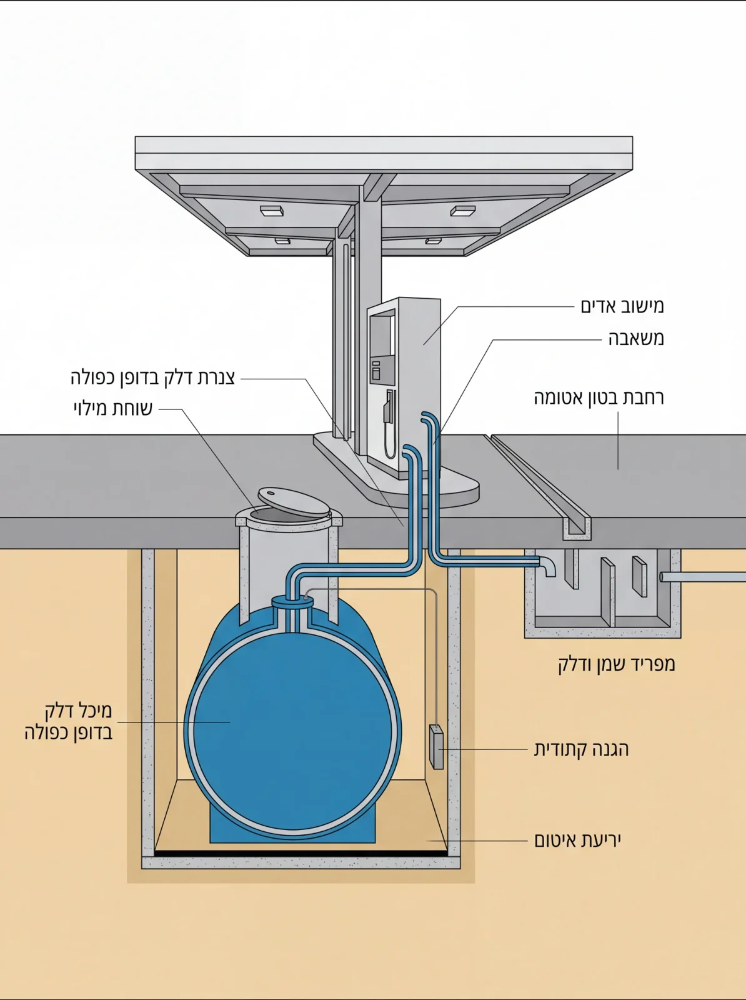
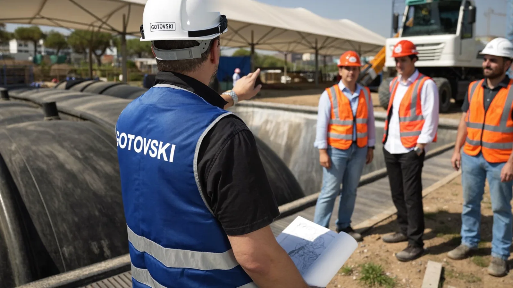

הקמת תחנות דלק
הקמת תחנות דלק שיפוץ ושדרוג תחנות
שיפוץ ושדרוג תחנות תחנות גז
תחנות גז עבודות צנרת דלק
עבודות צנרת דלק עבודות עפר ופיתוח
עבודות עפר ופיתוח תשתיות דלק לחוות שרתים
תשתיות דלק לחוות שרתים- ראשי
- תחומי פעילות
- הקמת תחנות דלק
הקמת תחנות דלק, מהיסודות ועד המשאבה
הקמה מלאה של תחנה חדשה: עבודות עפר, מיכלים, צנרת, ריצוף, סככה ומבנה שירות, בתיאום עם חברת הדלק והרשויות, ובמסירה עם כל האישורים.

גורם מבצע אחד לכל התחנה
הקמת תחנת דלק משלבת עבודות עפר, תשתיות דלק, בנייה, חשמל ורגולציה צפופה. כשכל אחד מהם נעשה על ידי קבלן אחר, הפערים ביניהם הם המקום שבו נוצרים העיכובים והתקלות. אנחנו מבצעים את כל שרשרת העבודה בעצמנו, מהחפירה הראשונה ועד המילוי הראשון, עם ציוד מכני הנדסי משלנו וצוותים קבועים.
אנחנו מכירים את המפרטים של חברות הדלק הגדולות ואת דרישות המשרד להגנת הסביבה ומשרד העבודה, ומתאמים מולם לאורך כל הפרויקט.
מה בונים מתחת לרחבת התדלוק
רוב התחנה נסגרת בבטון ולא רואים אותה אחר כך. בחתך: המיכל בדופן כפולה על יריעת איטום, שוחת המילוי מעל המיכל, צנרת דלק בדופן כפולה עד המשאבה, קו מישוב האדים, רחבת בטון אטומה עם תעלת ניקוז למפריד שמן ודלק, והגנה קתודית לצד המיכל.
כל אחד מהרכיבים האלה נבדק ומתועד לפני שהרחבה נסגרת, כי אחרי היציקה אין דרך זולה לתקן.

מהמשאבה עד המיכל
מה שהלקוח רואה הוא עמדת התדלוק. מה שמחזיק אותה עשרות שנים נמצא מתחת לרחבה, וזה סדר הרכיבים.
הסדר כאן הוא מהרחבה ומטה. הקווים המקווקווים מסמנים את כיוון זרימת הדלק, מהמיכל אל עמדות התדלוק. הצומת הכהה נבדקת ומתועדת לפני שהרחבה נסגרת.
כל שלב בהקמה, מגורם מבצע אחד
- עבודות עפר ובור מיכליםהכשרת שטח, חפירה מדויקת לבור המיכלים, מילוי מבוקר והידוק.
- מיכלים בדופן כפולההנחה, עיגון, יריעות איטום וחיישני חלל ביניים.
- צנרת דלק ואדיםצנרת בדופן כפולה, מישוב אדים Stage II, חיבורים בשוחות אטומות.
- שוחות ושוקת מילוישוחות אטומות מתחת למשאבות ומעל המיכלים, שוקת מילוי לפי דרישת 5 גלון.
- רחבות בטון וניקוזרחבה אטומה עם שיפועים, תעלות איסוף ומפריד שמן ודלק.
- סככה, אי תדלוק ומבנה שירותבניית הסככה, עמדות התדלוק, מבנה השירות והחדר הטכני.
- הגנה קתודית וחשמל סטטימערכות שמאריכות את חיי המיכלים ומונעות ניצוץ בזמן מילוי.
- בדיקות, אישורים ומסירהבדיקות לחץ ואטימות מתועדות, אישורי הרשויות וחברת הדלק, מילוי ראשון.
מהתכנון ועד המסירה, בחמישה שלבים
ליווי המתכננים, תיאום עם חברת הדלק והרשויות, ותכנון לוח זמנים וסדר ביצוע.
הכשרת שטח, חפירת בור מיכלים, מילוי מבוקר, ניקוז ותשתיות תת־קרקעיות.
הנחת מיכלים בדופן כפולה, צנרת דלק ואדים, בדיקות לחץ ואטימות מתועדות.
רחבת בטון אטומה, מפריד שמן ודלק, סככה, מבנה שירות וחדר טכני.
התקנת ציוד, בדיקות מערכות, אישורי הרשויות וחברת הדלק, ומילוי ראשון.



תחנת נובר אשדוד: הקמה מחדש לפי התקנים המחמירים
התחנה הוקמה מחדש תוך הריסת התחנה הקיימת, פירוק כל תשתיות הדלק, משטחי הבטון, איי התדלוק והאספלט. הבנייה מחדש כללה צנרת פיברגלאס להולכת דלק, מערכת מישוב אדים (Stage II), מערכות חשמל סטטי והגנה קתודית, מערכת מילוי דופן כפולה ושוקת מילוי תקנית (5 גלון). התחנה הורחבה עם תשתיות למכונות שטיפת רכבים ואפשרות כניסה למשאיות, כולל בניית קיר תומך באורך 64 מטר ובגובה 3 מטר.
גם תחנת חצי חינם בחולון הוקמה מחדש על ידינו: תשתיות דלק, צנרת מילוי, תעלות ניקוז, מפריד דלקים ומיכל טמון בעומק ארבעה מטר. לכל הפרויקטים
הקמות מהשטח
לפני שמקימים תחנה
כמה זמן לוקחת הקמה של תחנת דלק חדשה?
תלוי בהיקף, באישורים ובתנאי הקרקע. בשיחה הראשונה נבין את הפרויקט וניתן הערכת לוח זמנים מסודרת, ובהצעת המחיר נפרט את השלבים.
באיזה שלב כדאי להכניס את הקבלן המבצע?
כבר בשלב התכנון. קבלן שמכיר את הדרישות של חברות הדלק ושל הרשויות מזהה מוקדם פרטים שיקר לשנות אחרי שהתוכניות אושרו: עומק בור מיכלים, תוואי צנרת או ניקוז.
מה כוללת המסירה?
בדיקות לחץ ואטימות מתועדות לכל המערכות, התקנת הציוד, אישורי הרשויות וחברת הדלק, ומילוי ראשון. התיעוד נמסר ללקוח.
מקימים תחנה? נתחיל מהתוכניות
שלחו לנו את פרטי הפרויקט ונחזור אליכם לשיחה קצרה. אם יש כבר תוכניות, נשמח לעבור עליהן לפני הצעת המחיר. או ישירות לעוזי: 050-270-3674